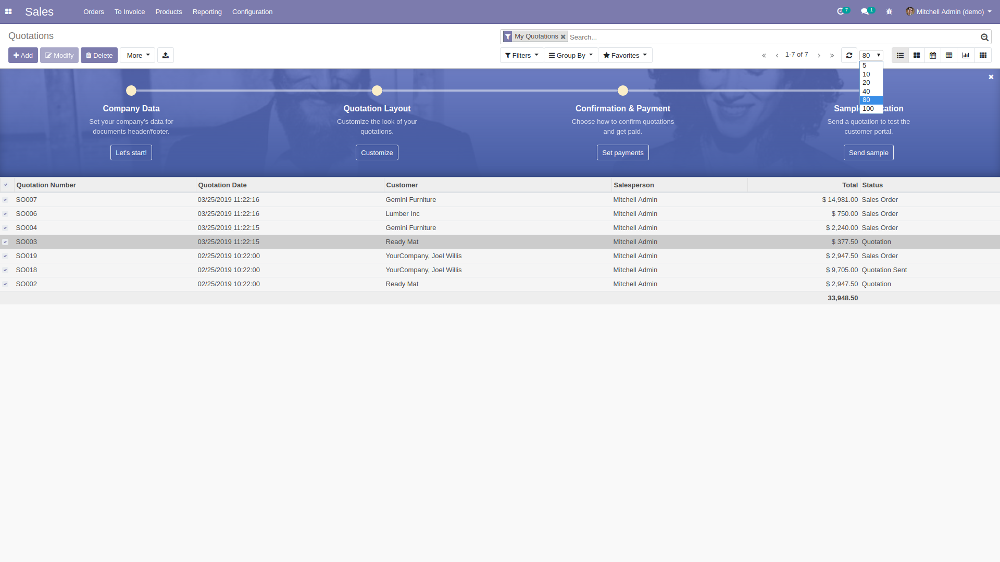

Overview
This module presents the Enhanced CRUD operations in a different way, with Form Views in a new window and a new pager and contextual menu for List and Kanban Views.


This module presents the Enhanced CRUD operations in a different way, with Form Views in a new window and a new pager and contextual menu for List and Kanban Views.
With configuration options to prevent you from having to modify your code.